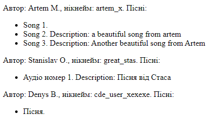

Лємєшова С. С,
Лємєшова С. С,
 Тітов Є. О,
Тітов Є. О,
 Юдаков О. С.
Юдаков О. С.
ЛАБОРАТОРНА РОБОТА №7
Тема:ВЗАЄМОДІЯ WEB-ЗАСТОСУВАНЬ З СИСТЕМОЮ УПРАВЛІННЯ БАЗАМИ ДАНИХ (СУБД). ОБРОБКА РЕЗУЛЬТАТІВ SQL-ЗАПИТІВ У PHP-СЦЕНАРІЇ.
Мета: придбати практичні навички підключення до СУБД, вибору бази даних, виконання запиту, отримання результатів, відключення від СУБД.
Розташування лабораторної: GitHub Лабороторна робота №7
Опис об'єктів предметної галузі
Перед початком моделювання баз даних необхідно визначитись з предметними областями та описати їх.Перелік варіантів команди:
- Вавринюк: 3. Комп'ютерна техніка
- Тітов: 5. Архів фотографій
- Лємєшова: 6. Розклад руху залізничного транспорту
- Юдаков: 10. Аудіотека
Опис предметних областей:
- Вавринюк
- Тітов
- Лємєшова
- Юдаков
- Кожна пісня може мати свій альбом.
- Кожна плейліст може мати безліч пісень та належить користувачу.
- Кількість пісень в альбомі та плейлисті необмежена.
- Користувачі. Атрибути користувачів – ID, дані для входу, ім’я користувача, тип підписки.
- Пісні. Атрибути пісень – ID, назва, виконавець, альбом.
- Виконавці. Атрибути виконавців – ID, ПІБ, псевдонім.
- Альбоми. Атрибути альбомів – ID, назва, виконавець.
- Плейлісти. Атрибути плейлістів – ID, назва, кількість пісень, власник.
База даних створюється для інформаційного обслуговування
користувачів аудіотеки. БД повинна містити дані про
користувачів, виконавців, пісні та музичні альбоми і надавати
можливість до швидкого підбору плейлістів. Відповідно до
предметної області система будується з врахуванням наступних
особливостей:
Виділимо базові сутності цієї предметної області:
Виділимо базові сутності цієї предметної області:
Інфологічна модель
Для зображення інфологічної моделі побудуємо ER-діаграми з нотаціями Чена/Crow's Foot:- Вавринюк
- Тітов
- Лємєшова
- Юдаков
Даталогічна модель
Після нормалізації до 3НФ було отримано такі даталогічні моделі, побудовані за допомогою MS Access:- Вавринюк
- Тітов
- Лємєшова
- Юдаков
Реалізація БД в СУБД MySQL, phpMyAdmin
- Вавринюк
- Тітов
- Лємєшова
- Юдаков
Введення, виведення даних БД, пошук даних
- Вавринюк
- Тітов
- Лємєшова
- Юдаков Додавання і виведення:
